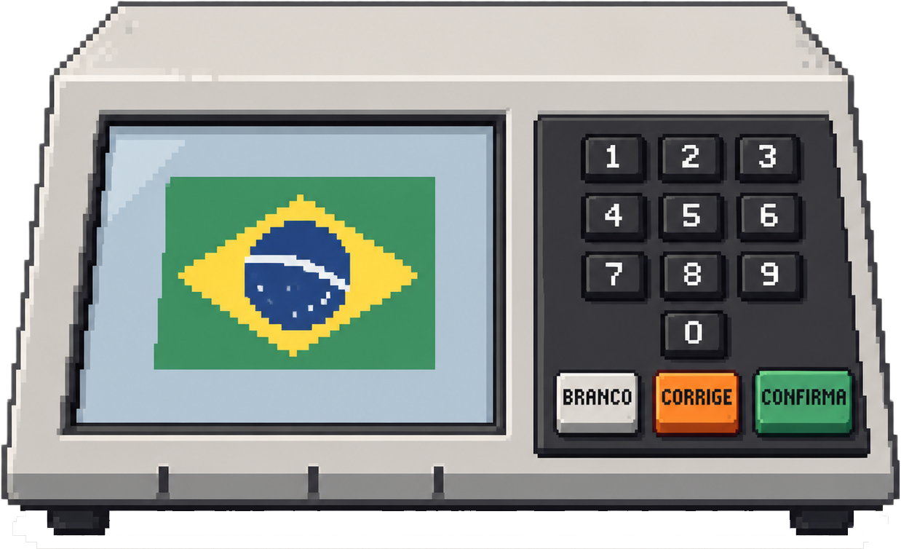

INDECISÔMETRO
Descubra, de acordo com suas convicções em quem você deve votar!

Sem cadastro. Só você e suas escolhas.
Criado por CAP Systems
HORA DE ESCOLHER
Qual você acha
mais grave?
Selecione uma opção para continuar
Uma escolha por rodada. Não existe empate.
CALCULANDO SUA INDECISÃO
Um lado, outro lado…
já vamos descobrir.
INDECISÔMETRO
╱ │ │ │ │ ╲
13
22
← DECIDIR É COMPLICADO →
O ponteiro também está em dúvida...